MATERI PEMBELAJARAN SISTEM BAHAN BAKAR SEPEDA MOTOR
DEFINISI
Sepeda motor adalah sejenis mesin pembakaran dalam yang menghasilkan energi geraknya melalui pembakaran campuran udara dan bahan bakar. Untuk memastikan pembakaran ini terjadi di ruang bakar, diperlukan sebuah sistem bahan bakar. Berdasarkan cara kerjanya, mesin pembakaran dalam ini bertugas mengubah energi panas yang tersimpan dalam bahan bakar menjadi energi mekanik (gerak). Sumber utama energi panas berasal dari reaksi kimia pembakaran antara campuran udara dan bahan bakar di dalam ruang bakar. Energi panas yang dihasilkan dari proses ini menjadi sumber daya utama yang menggerakkan mesin motor.
Proses terjadinya pembakaran udara dan bahan bakar dalam ruang bakar, membutuhkan sebuah sistem bahan bakar. Sistem bahan bakar pada sepeda motor mutlak diperlukan, karena sistem bahan bakar memiliki beberapa fungsi, diantaranya :
1.Menyimpan bahan bakar
2.Menyalurkan bahan bakar bertekanan ke karburator
3.Mengabutkan bahan bakar
4.Mencampur udara dan bahan bakar di ruang bakar
5.Menyaring kotoran dalam bahan bakar sebelum masuk ke ruang bakar
6.Mengatur kebutuhan bahan bakar sesuai dengan kebutuhan engine
Dalam kendaraan sepeda motor terdapat 2 jenis system bahan bakar ,yaitu system bahan bakar konvensional(karburator), dan system bahan bakar EFI (Electronic Fuel Injection). Perbedaan dari kedua sistemm ini adalah sistem karburator menggunakan system mekanik, sedangkan system EFI system kerja nya dikontrol penuh oleh sensor elektronik (ECU). Jadi campuran bahan bakar pada system EFI lebih efisien / stabil di setiap rpm nya, namun tentunya perawatan pada system efi lebih kompleks dari pada system karburator.
Fungsi Sistem Bahan Bakar
Sistem bahan bakar pada sepeda motor berfungsi untuk menyimpan, menyalurkan, membersihkan, dan mengolah bahan bakar agar dapat digunakan mesin secara optimal. Bahan bakar disimpan dalam tangki, kemudian disaring dan dialirkan melalui selang atau pompa sebelum dicampurkan dengan udara melalui karburator atau sistem injeksi. Pada injeksi, berbagai sensor membantu ECU menentukan jumlah bahan bakar yang tepat sehingga tekanan, volume, dan rasio udara–bahan bakar selalu sesuai dengan kebutuhan mesin pada berbagai kondisi. Campuran yang ideal memastikan proses pembakaran berlangsung sempurna, menghasilkan tenaga optimal, konsumsi bahan bakar efisien, dan emisi lebih bersih. Dengan pengaturan yang tepat, sistem ini juga mendukung keamanan, keandalan mesin, serta ketahanan komponen agar sepeda motor dapat beroperasi secara stabil dan responsif.
Komponen Sistem Bahan Bakar
A. Bahan Bakar Konvensional
1. Fuel Tank (Tangki Bahan Bakar)
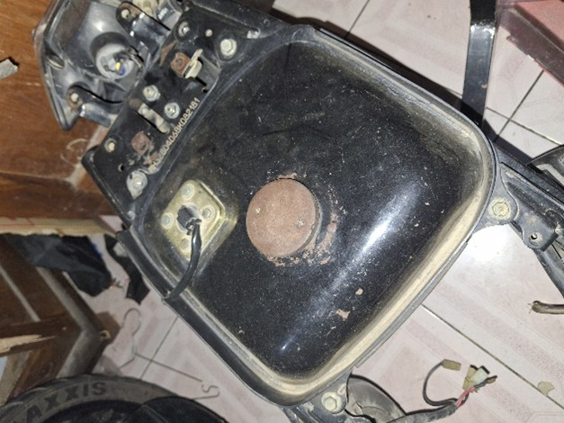
Tangki merupakan tempat persediaan bahan bakar. Posisi tangki bahan bakar pada sepeda motor biasanya berada di atas letak motor/engine-nya. Hal ini dimaksudkan guna memudahkan penyaluran bahan bakar berdasarkan prinsip gravitasi. Kapasitas tangki dibuat bermacam-macam tergantung dari besar kecilnya engine. Bahan tangki umumnya dibuat dari plat baja yang bagian dalamnya dilapisi logam yang tidak mudah berkarat. Namun demikian terdapat juga tangki bahan bakar yang terbuat dari aluminium. Tangki bahan bakar dilengkapi dengan pelampung dan sebuah tahanan geser untuk keperluan alat pengukur jumlah bahan bakar yang terdapat di dalam tangki.
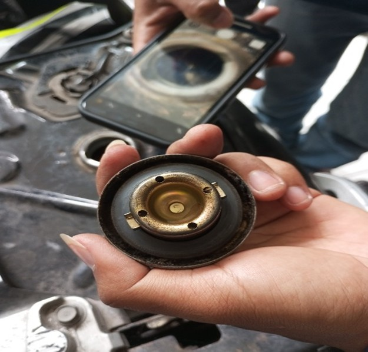
Struktur tangki terdiri dari :
1. Tutup tangki: berfungsi sebagai lubang masuknya bahan bakar, pelindung debu dan air, lubang pernafasan udara, dan menjaga agar bahan bakar tidak tumpah ketika sepeda motor terbalik.
2. Filler tube: berfungsi menjaga melimpahnya bahan bakar pada saat ada goncangan (jika kondisi panas, bahan bakar akan memuai).
3. Fuel cock (kran bahan bakar): berfungsi untuk membuka dan menutup aliran bahan bakar dari tangki dan sebagai penyaring kotoran/partikel debu. Terdapat dua tipe kran bahan bakar, yaitu tipe standar dan tipe vakum. Tipe standar adalah kran bahan bakar yang pengoperasiannya dialakukan secara manual. Ada tiga posisi kran pada tangki bahan bakar, yaitu: OFF, RES, dan ON. Jika kran diputar ke posisi OFF akan menutup aliran bahan bakar dari tangki dan posisi ini biasanya digunakan untuk pemberhentian yang lama. Jika kran pada posisi RES digunakan untuk pengendaraan pada tangki cadangan dan kran pada posisi ON untuk membuka aliran bahan bakar pada pengendaraan yang normal.
4. Damper locating (peredam): berupa karet yang berfungsi untuk meredam posisi tangki saat sepeda engine berjalan.
2. Fuel line (Penyalur)
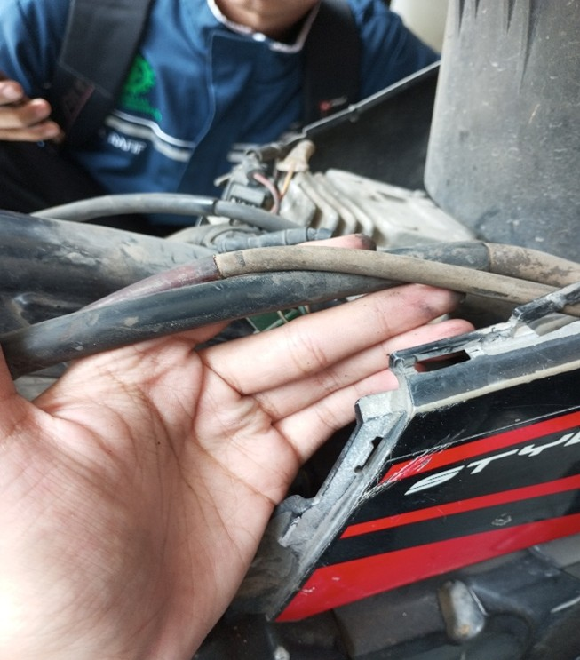
Befungsi sebagai saluran penghubung untuk mengalirkan bahan bakar dari tangki ke karburator atau injektor agar mesin bisa menyala dan berjalan.
3. Filter Bahan Bakar (penyaring)
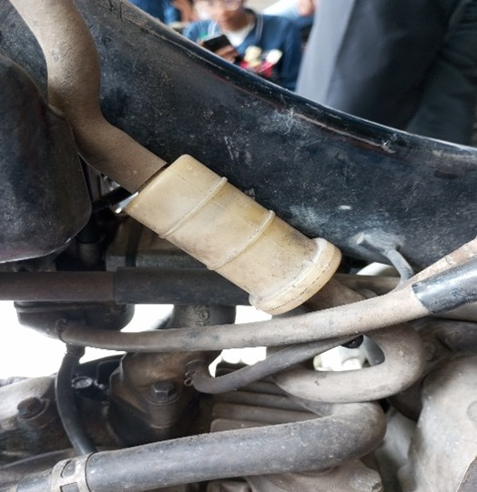
Saringan udara berfungsi untuk memisahkan kotoran sehingga udara yang masuk kekarburator dan ruang bakar benar-benar bersih. Jika saringan udara kotor dapat menyebabkan:
a. Saluran saluran yang ada dalam karburator tersumbat.
b. Piston dan silinder akan lebih cepat aus.
4. Fuel pump (Pompa Bahan Bakar)
Fuel pump berfungsi memompa bahan bakar dari tangki dan mengalirkannya secara paksa ke karburator, memastikan suplai bahan bakar yang cukup untuk proses pencampuran dengan udara sebelum masuk ruang bakar.
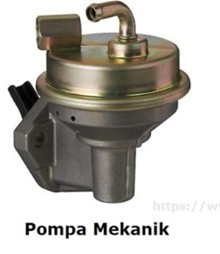
Cara Kerja pompa ini menggunakan tenaga mesin (rocker arm/camshaft) untuk menggerakkan diafragma yang naik-turun, menciptakan vakum untuk menyedot bensin dari tangki ke karburator. Ciri Khas dari pompa mekanik adalah Konstruksinya yang sederhana, butuh tenaga dari putaran mesin, dan lebih sering ditemukan pada motor lawas dengan sistem karburator. Pompa ini memiliki kelebihan perawatan yang mudah karena konstruksi sederhana.
5. Karburator
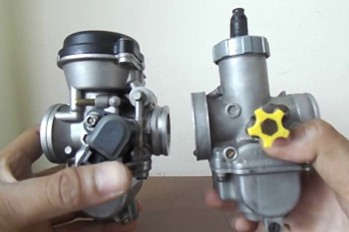
Karburator berfungsi untuk mengabutkan bahan bakar . Karburator juga harus dapat menyediakan campuran udara dan bahan bakar yang tepat pada segala kondisi kerja engine. Untuk dapat memahami prinsip kerja dari karburator ada 3 hal yang harus dipahami terlebih dahulu, antara lain:
1. Tekanan atmosfir yaitu tekanan udara yang berada di sekitar kita. Semua molekul udara menekan ke bawah sebagai efek gravitasi. Sebagai patokan, tekanan udara pada permukaan air laut berkisar 101,3 KPa. Tekanan ini kenyataannya bervariasi pada kondisi ketinggian yang berbeda, jika permukaan meningkat tekanan atmosfer menurun.
2. Kevakuman yaitu keadaan dimana tekanan di dalam ruang tertutup lebih rendah dibandingkan dengan tekanan sekitarnya. Contohnya tekanan dalam silinder/ruang bakar pada saat piston bergerak dari Titik Mati Atas (TMA) ke Titik Mati Bawah (TMB) pada langkah hisap.
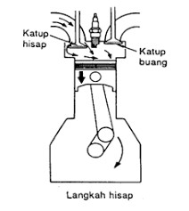
3. Prinsip kerja venturi yaitu penyempitan ruangan sehingga udara menurun, sebaliknya kecepatan naik. Sebuah peningkatan kecepatan udara melalui venturi, kevakuman akan meningkat pangkat dua dengan meningkatnya kecepatan udara, sebagai contoh, jika kecepatan udara meningkat ganda nilai kevakuman akan meningkat empat kali, dan jika kecepatan udara meningkat tiga kali nilai kevakuman meningkat sembilan kali.
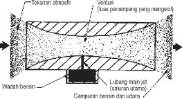
Perbedaan tekanan merupakan dasar kerja suatu karburator, yaitu dengan membuat venturi seperti gambar di atas. Semakin cepat udara mengalir pada saluran venturi, maka tekanan akan semakin rendah dan kejadian ini dimanfaatkan untuk menghisap bahan bakar.
Tipe Karburator Berdasarkan konstruksinya
karburator pada sepeda motor dapat dibedakan menjadi tiga, yaitu:
1. Karburator dengan venturi tetap (fixed venturi).
Karburator tipe ini merupakan karburator yang diameter venturinya tidak bisa dirubah-rubah lagi. Besarnya aliran udaranya tergantung pada perubahan throttle butterfly (katup throttle/katup gas). Pada tipe ini biasanya terdapat pilot jet untuk kecepatan idel/langsam. Terdapat juga sistem akselerasi atau percepatan untuk mengantisipasi saat engine di gas dengan tiba-tiba. Semua sistem tambahan tersebut dimaksudkan untuk membantu agar engine bisa lebih responsif.
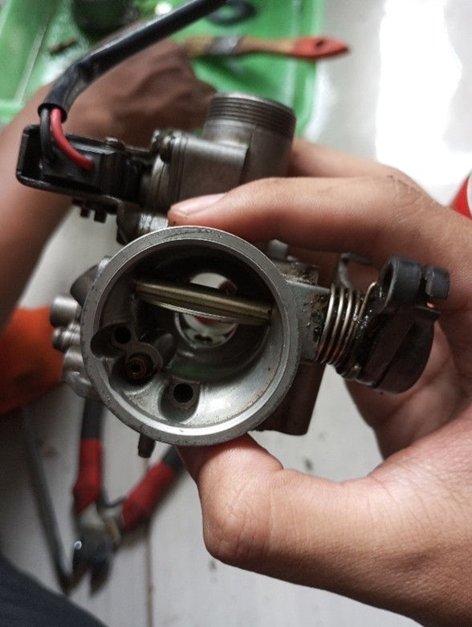
2.Karburator dengan venturi berubah-ubah (slide carburettor or variable venturi)
Karburator dengan venturi berubah-ubah menempatkan throttle valve/throttle piston (skep) berada didalam venturi dan langsung dioperasikan oleh kawat gas. Oleh karena itu, diameter venturi bisa dibedakan (bervariasi) susuai besarnya aliran campuran bahan bakar udara dalam karburator. Karburator tipe ini dalam menyalurkan bahan bakar hanya melalui main jet (spuyer utama) yang dikontrol oleh needle (jarum), karena bentuk jarum dirancang tirus. Hal ini akan mengurangi jet (spuyer) dan saluran tambahan lainnya seperti yang terdapat pada karburator venturi tetap.
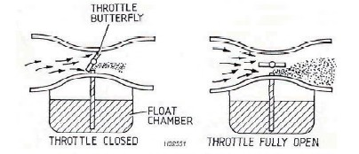
3.Karburator dengan kecepatan konstan (constant velocity carburettor).
Karburator tipe ini merupakan gabungan dari kedua karburator di atas, yaitu variable venturi yang dilengkapi katup gas (throttle valve butterfly). Sering juga disebut dengan karburator CV (CV caburettor). Piston valve yang berada dalam venturi berfungsi agar diameter venturi berubah-ubah dengan bergerak keatas dan kebawah. Pergerakkan piston valve ini dilakukan oleh tekanan negatif (kevakuman) dalam venturi tersebut
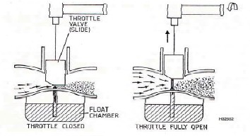
Keterangan:
1. Diafragma
2. lubang udara masuk ke ruang vakum
3. Katup gas/throttle valve
4. Pegas pengembali
Berdasarkan gambar diatas, udara yang mempunyai tekanan sama dengan udara luar mengisi daerah di bawah diafragma (3). Udara tersebut masuk ke ruang vakum lewat lubang (2) pada bagian bawah piston. Tekanan rendah dihasilkan dalam ruang vakum dan piston mulai terangkat karena katup gas (3) dibuka oleh kabel gas. Pegas pengembali (4) dalam piston membantu menjaga piston berada dalam posisinya sehingga tekanan pada kedua sisi diaprgama seimbang. Ketika katup gas dibuka penuh, kecepatan udara yang melewati venturi bertambah. Hal ini akan menghasilkan tekanan dalam ruang vakum yang lebih rendah lagi, sehingga piston terangkat penuh.
Bagian utama karburator dapat dilihat dari gambar dibaawah ini :
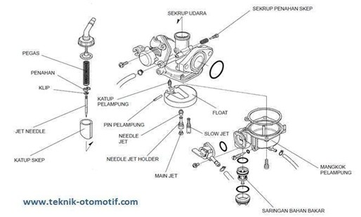
1. Intake Manifold
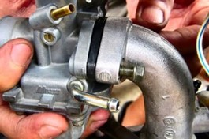
Sebuah tabung berbentuk silinder, berfungsi sebagai tempat terjadinya campuran udara dan bahan bakar.
2. venturi
yaitu bagian yang sempit di dalam tabung karburator berfungsi untuk mempertinggi kecepatan aliran udara. Sesuai dengan tipe karburator yang ada pada sepeda motor, diameter venturi akan selalu tetap untuk tipe karburator venturi tetap dan diameter venturi akan berubah-ubah untuk tipe karburator varible venturi.
3. main jet
Berfungsi untuk mengontrol aliran bahan bakar pada main system (sistem utama) pada putaran menengah dan tinggi.
4. pilot jet
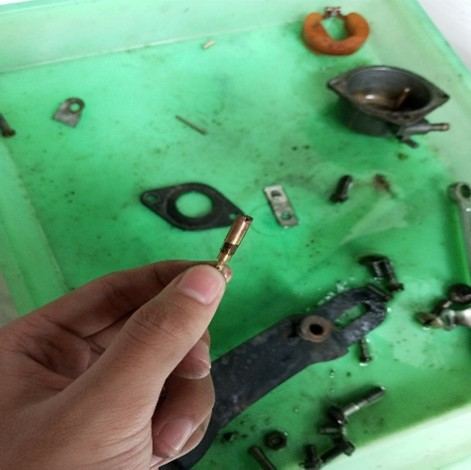
Berfungsi sebagai pengontrol aliran bahan bakar pada bagian pilot system pada putaran rendah dan menengah.
5. Jet needle (jarum pengabut)
Bagian ini berkerja sama dengan jarum gas dan bertugas mengatur jumplah suplay bahan bakar ke mesin saat putaran menengah
6. Float (Pelampung)
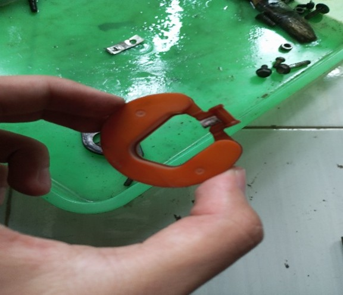
Fungsi pelampung karburator adalah untuk mengatur jumlah bahan bakar di dalam float chamber agar tidak berlebihan atau kurang, serta menyimpan bahan bakar sementara sebelum disalurkan ke ruang bakar.
7. Mangkuk Pelampung (float chamber)
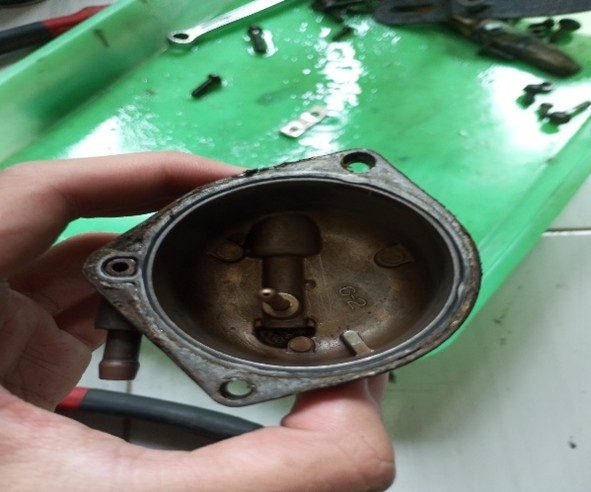
Fungsi mangkuk pelampung pada karburator adalah sebagai wadah penampung bahan bakar sementara sebelum dicampur dengan udara, sekaligus menjaga ketinggian bahan bakar tetap stabil menggunakan pelampung (float) dan jarum pelampung agar tidak meluap (banjir) atau kekurangan, sehingga pasokan bahan bakar ke ruang bakar selalu konstan sesuai kebutuhan mesin.
8. Sekrup penahan skep (throttle stop screw)
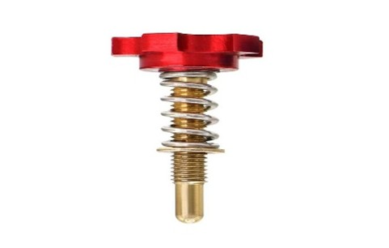
Fungsi sekrup penahan skep (throttle stop screw) pada karburator adalah untuk mengatur batas minimum bukaan skep (katup gas), yang secara langsung mengontrol putaran stasioner (idle) mesin, agar mesin tidak mati saat tidak ada tarikan gas, serta menyesuaikan kecepatan putaran mesin saat awal.
9. Sekrup udara
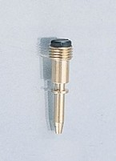
Fungsi sekrup udara adalah untukmengatur jumlah udara yang dicampurkan dengan bahan bakar dalam karburator, sehingga mengatur perbandingan campuran udara dan bahan bakar.
Cara kerja system Karburator
Sebuah karburator terdiri dari banyak komponen yang fungsinya satu sama lain berbeda. Untuk engine yang sederhana dipakai karburator yang sederhana, sedangkan umumnya engine yang tergolong moderen mempunyai karburator yang lebih rumit. Yang dimaksud dengan engine yang sederhana di sini ialah engine yang tidak memerlukan bermacam macam kecepatan dan beban yang berubah. Untuk dapat memenuhi bermacam-macam kebutuhan beban dan kecepatan maka karburator dilengkapi dengan beberapa sistem. Makin sederhana sebuah karburator, makin sedikit sistem yang dimilikinya. Macam amacam system dalam karburator antara lain :
1. Sistem pelampung
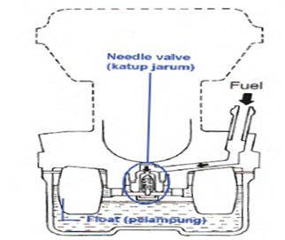
Karburator dilengkapi berbagai sistem-sistem untuk menunjang kinerja dari mesin. Salah satu sistem yang ada pada karburator adalah sistem pelampung (float system). Sistem pelampung berfungsi untuk menjaga atau mengatur agar permukaan bahan bakar yang ada di dalam ruang pelampung agar tetap konstan dan stabil. Pada sistem pelampung pada karburator terdiri dari beberapa komponen yaitu katup jarum (needle valve), pelampung (float) dan juga ruang pelampung (floating chamber). Komponen pada katup jarum atau needle valve dilengkapi dengan komponen pegas (spring), tujuannya adalah untuk mencegah agar katup jarum bergerak naik turun karena getaran dari mesin.
Cara kerja sistem pelampung
a. Saat bahan bakar di dalam ruang pelampung berkurang
Saat jumlah bahan bakar berkurang atau permukaan bahan bakar berkurang di dalam ruang pelampung maka pelampung juga akan turun kebawah. Ketika pelampung turun maka katup jarum pelampung akan ikut turun sehingga akan membuka saluran masuk. Karena pada saluran masuk terbuka maka bahan bakar akan mengalir dari tanki masuk ke dalam ruang pelampung (mengisi ruang pelampung)
b. Saat bahan bakar di dalam ruang pelampung sudah tersisi.
Ketika bahan bakar sudah terisi maka tinggi maka permukaan bahan bakar yang ada di dalam ruang pelampung akan naik sehingga menyebabkan pelampung juga ikut naik. Karena itu pelampung naik maka katup jarum pun akan naik sampai katup jarum menutup saluran bahan bakar yang masuk ke dalam ruang pelampung. Setelah saluran menutup maka bahan bakar dari tanki tidak akan disalurkan ke dalam ruang pelampung.
c. Saat kendaraan beroperasi
Pada saat kendaraan beroperasi maka tinggi permukaan bahan bakar di dalam ruang pelampung akan berubah ubah, akibanya pelampung dalam carburator akan naik turun. Pada saat ini bahan bakar di ruang pelampung akan berkurang karena disuplai bahan bakar ke ruang bakar untuk pembakaran menjadi berkurang dan jika bahan bakar berkurang maka pelampung akan turun dan katup jarum juga akan turun sehingga saluran masuk akan membuka dan bahan bakar dapat masuk atau mengisi ruang pelampung sampai permukaan bahan bakar naik dan katup jarum menutup saluran bahan bakar yang masuk ke dalam ruang pelampung. Kejadian tersebut akan terjadi terus menerus secara berulang-ulang saat kendaraan beroperasi.
2. Sistem Kecepatan Rendah (Pilot System).
Sistem kecepatan rendah ini mencakup keadaan aliran bahan bakar ketika engine dihidupkan pada putaran idle/langsam. Pada waktu engine baru dihidupkan, dibutuhkan campuran bahan bakar dan udara yang gemuk (campuran bahan bakar lebih banyak). Throttle diatur dalam keadaan tertutup sehingga jumlah udara yang masuk sedikit. Udara masuk melalui celah pada ujung choke atau lebih tepatnya melalui pengontrolan dari pilot air jet. Bahan bakar hanya masuk melalui ujung sekrup penyetel stasioner (pilot screw). Prinsip kerja sistem kecepatan rendah pada setiap tipe karburator sama, yaitu dengan memanfaatkan kevakuman yang terjadi di bawah katup throttle.
3. Sistem Kecepatan Utama/Tinggi
Bila katup gas/katup throttle dibuka ¾ sampai dibuka penuh, maka aliran udara sudah cukup kuat untuk menarik udara dari main jet, dan bahan bakar seluruhnya hanya melalui main jet. Pada karburator tipe variable venturi dan tipe kecepatan konstan (CV), ujung tirus needle (jarum) akan membuka main jet sehingga pengontrolan aliran campuran bahan bakar dan udara saat itu melewati main jet. Pada karburator tipe venturi tetap, tidak terdapat needle seperti pada karburator tipe variable dan tipe CV. Oleh karena itu, sistem kecepatan utamanya bisa terdapat dua atau lebih. Kecepatan utama tersebut sering diistilahkan dengan kecepatan utama primer (primary high speed system) dan kecepatan utama sekunder (secondary high speed system). Sistem kecepatan utama primer bekerja pada saat sepeda motor berjalan pada kecepatan sedang (menengah) dan tinggi. Sistem ini umumnya bekerja ketika engine bekerja pada beban ringan dan jumlah udara yang masuk masih sedikit. Bila suplai campuran udara dan bahan bakar ke dalam silinder (ruang bakar) oleh sistem kecepatan utama primer tidak cukup, maka sistem kecepatan utama sekunder pada saat ini mulai bekerja membantu sistem kecepatan utama primer.
4. Sistem Choke.
Sistem choke pada karburator berfungsi utama untuk mempermudah menghidupkan mesin yang masih dingin dengan cara memperkaya campuran udara dan bahan bakar . Ketika mesin dalam keadaan dingin, penguapan bensin lambat, menyebabkan campuran normal menjadi terlalu kurus dan mesin sulit menyala. Untuk mengatasinya, pengendara mengaktifkan tuas choke, yang secara mekanis menutup sebagian besar katup atau saluran udara utama yang masuk ke karburator. Penutupan ini menyebabkan kevakuman (tekanan negatif) meningkat drastis di dalam venturi karburator akibat hisapan piston yang kuat. Peningkatan vakum ini secara paksa menghisap bahan bakar dalam jumlah yang jauh lebih besar dari jet karburator, menghasilkan campuran yang kaya bahan bakar dan siap dibakar, sehingga mesin dapat menyala dan stabil dengan mudah. Setelah mesin mencapai suhu operasional yang memadai, choke harus segera dimatikanuntuk mengembalikan rasio campuran ke kondisi normal.
5. Sistem Percepatan
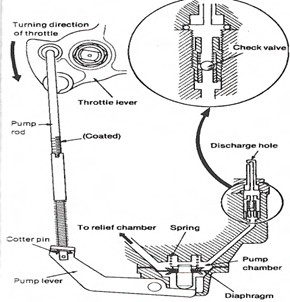
Pada waktu engine mengalami percepatan (engine di gas dengan tiba-tiba), throttle valve (untuk karburator tipe venturi tetap maupun tipe CV) atau throttle piston atau skep (untuk karburator tipe variable venturi) akan membuka secara tiba-tiba pula, sehingga aliran udara menjadi lebih cepat. Akan tetapi karena bahan bakar lebih berat dibanding udara, maka bahan bakar akan datang terlambat masuk ke dalam intake manifold. Akibatnya campuran tiba-tiba menjadi kurus sedangkan engine berputar dengan tambahan beban untuk keperluan percepatan tersebut. Untuk mendapatkan campuran yang gemuk, maka pada waktu percepatan, karburator dilengkapi dengan "pompa percepatan." Pompa ini dihubungkan dengan pedal gas (throttle) sehingga jika throttle dibuka dengan tiba-tiba maka plunyer pompa menekan bahan bakar yang dibawahnya. Dengan demikian jumlah bahan bakar yang keluar melalui pengabut utama (main jet) akan lebih banya. Setelah ditekan, pump lever akan kembali ke posisi semula dengan adanya dorongan pegas di atas diafragma. Pergerakan diafragma ke bawah membuat pump chamber membesar lagi. Desain valve yang ada di pump chamber dibuat berlawanan arah antara katup masuk dan katup buang. Saat diafragma ke bawah, katup masuk terbuka-katup buang menutup, membuat bahan bakar kembali masuk ke pump chamber dan sistem percepatan siap untuk dipakai kembali